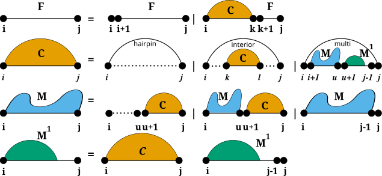
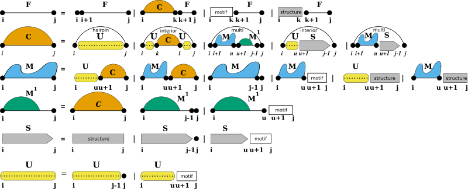
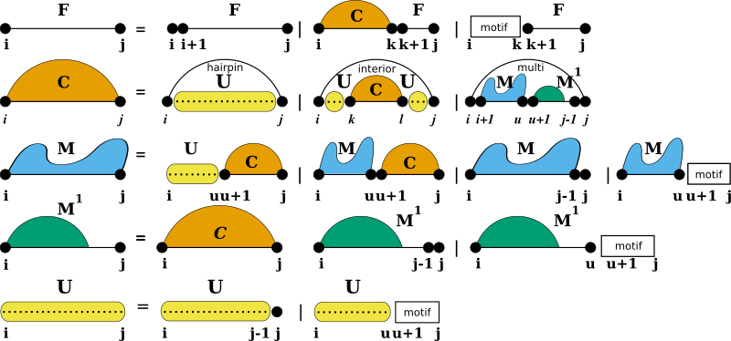

The RNA Folding Grammar
The RNA folding grammar as implemented in RNAlib
Specialized Modules:
Secondary Structure Folding Recurrences
To predict secondary structures composed of the four distinguished loop types introduced before, all algorithms implemented in RNAlib follow a specific recursive decomposition scheme, also known as the RNA folding grammar, or Secondary Structure Folding Recurrences.
However, compared to other RNA secondary structure prediction libraries, our implementation allows for a fine-grained control of the above recursions by constraining both, the individual derivations of the grammar as well as the evaluation of particular loop contributions. Furthermore, we provide a mechanism to extend the above grammar with additional derivation rules, so-called Domains.
Additional Structural Domains
Some applications of RNA secondary structure prediction require an extension of the regular RNA folding grammar. For instance one would like to include proteins and other ligands binding to unpaired loop regions while competing with conventional base pairing. Another application could be that one may want to include the formation of self-enclosed structural modules, such as G-quadruplexes. For such applications, we provide a pair of additional domains that extend the regular RNA folding grammar, Structured Domains and Unstructured Domains.
While unstructured domains are usually determined by a more or less precise
sequence motif, e.g. the binding site for a protein, structured domains are
considered self-enclosed modules with a more or less complex pairing pattern.
Our extension with these two domains introduces two production rules to fill
additional dynamic processing matrices S and U where we store the
pre-computed contributions of structured domains (S), and unstructured
domains (U).
Structured Domains
Usually, structured domains represent self-enclosed structural modules that exhibit a more or less complex base pairing pattern. This can be more or less well-defined 3D motifs, such as G-Quadruplexes, or loops with additional non-canonical base pair interactions, such as kink-turns.
Note
Currently, our implementation only provides the specialized case of G-Quadruplexes.
Unstructured Domains
Unstructured domains appear in the production rules of the RNA folding grammar wherever new unpaired nucleotides are attached to a growing substructure (see also Lorenz et al. [2016]):
The white boxes represent the stretch of RNA bound to the ligand and represented by a more or less specific
sequence motif. The motif itself is considered unable to form base pairs. The additional production rule U
is used to precompute the contribution of unpaired stretches possibly bound by one or more ligands. The
auxiliary DP matrix for this production rule is filled right before processing the other (regular) production
rules of the RNA folding grammar.
Domain Extension API
For the sake of flexibility, each of the domains is associated with a specific data structure serving as an abstract interface to the extension. The interface uses callback functions to
pre-compute arbitrary data, e.g. filling up additional dynamic programming matrices, and
evaluate the contribution of a paired or unpaired structural feature of the RNA.
Implementations of these callbacks are separate for regular free energy evaluation, e.g. MFE prediction, and partition function applications. A data structure holding arbitrary data required for the callback functions can be associated to the domain as well. While RNAlib comes with a default implementation for structured and unstructured domains, the system is entirely user-customizable.
Constraints on the Folding Grammar
Secondary Structure constraints can be subdivided into two groups:
Hard Constraints
Soft Constraints
While Hard-Constraints directly influence the production rules used in the folding recursions by allowing, disallowing, or enforcing certain decomposition steps, Soft-constraints on the other hand are used to change position specific contributions in the recursions by adding bonuses/penalties in form of pseudo free energies to certain loop configurations.
Note
Secondary structure constraints are always applied at decomposition level, i.e. in each step of the recursive structure decomposition, for instance during MFE prediction.
Hard Constraints API
Hard constraints as implemented in our library can be specified for individual loop types, i.e. the atomic derivations of the RNA folding grammar rules. Hence, the pairing behavior of both, single nucleotides and pairs of bases, can be constrained in every loop context separately. Additionally, an abstract implementation using a callback mechanism allows for full control of more complex hard constraints.
See also…
Soft Constraints API
For the sake of memory efficiency, we do not implement a loop context aware version of soft constraints. The static soft constraints as implemented only distinguish unpaired from paired nucleotides. This is usually sufficient for most use-case scenarios. However, similar to hard constraints, an abstract soft constraints implementation using a callback mechanism exists, that allows for any soft constraint that is compatible with the RNA folding grammar. Thus, loop contexts and even individual derivation rules can be addressed separately for maximum flexibility in soft-constraints application.
See also…
Soft Constraints, Incorporating Ligands Binding to Specific Sequence/Structure Motifs, SHAPE Reactivity Data
Typedefs
-
typedef int (*vrna_grammar_rule_f)(vrna_fold_compound_t *fc, int i, int j, void *data)
- #include <ViennaRNA/grammar.h>
-
typedef void (*vrna_grammar_rule_f_aux)(vrna_fold_compound_t *fc, int i, int j, void *data)
- #include <ViennaRNA/grammar.h>
-
typedef FLT_OR_DBL (*vrna_grammar_rule_f_exp)(vrna_fold_compound_t *fc, int i, int j, void *data)
- #include <ViennaRNA/grammar.h>
-
typedef void (*vrna_grammar_rule_f_aux_exp)(vrna_fold_compound_t *fc, int i, int j, void *data)
- #include <ViennaRNA/grammar.h>
-
typedef void (*vrna_grammar_cond_f)(vrna_fold_compound_t *fc, unsigned char stage, void *data)
- #include <ViennaRNA/grammar.h>
-
typedef void (*vrna_grammar_data_free_f)(void *data)
- #include <ViennaRNA/grammar.h>
Free auxiliary data.
- Param data
The auxiliary data to be free’d
-
typedef struct vrna_gr_aux_s vrna_gr_aux_t
- #include <ViennaRNA/grammar.h>
Functions
-
int vrna_gr_set_aux_f(vrna_fold_compound_t *fc, vrna_grammar_rule_f cb)
- #include <ViennaRNA/grammar.h>
-
int vrna_gr_set_aux_exp_f(vrna_fold_compound_t *fc, vrna_grammar_rule_f_exp cb)
- #include <ViennaRNA/grammar.h>
-
int vrna_gr_set_aux_c(vrna_fold_compound_t *fc, vrna_grammar_rule_f cb)
- #include <ViennaRNA/grammar.h>
-
int vrna_gr_set_aux_exp_c(vrna_fold_compound_t *fc, vrna_grammar_rule_f_exp cb)
- #include <ViennaRNA/grammar.h>
-
int vrna_gr_set_aux_m(vrna_fold_compound_t *fc, vrna_grammar_rule_f cb)
- #include <ViennaRNA/grammar.h>
-
int vrna_gr_set_aux_exp_m(vrna_fold_compound_t *fc, vrna_grammar_rule_f_exp cb)
- #include <ViennaRNA/grammar.h>
-
int vrna_gr_set_aux_m1(vrna_fold_compound_t *fc, vrna_grammar_rule_f cb)
- #include <ViennaRNA/grammar.h>
-
int vrna_gr_set_aux_exp_m1(vrna_fold_compound_t *fc, vrna_grammar_rule_f_exp cb)
- #include <ViennaRNA/grammar.h>
-
int vrna_gr_set_aux(vrna_fold_compound_t *fc, vrna_grammar_rule_f_aux cb)
- #include <ViennaRNA/grammar.h>
-
int vrna_gr_set_aux_exp(vrna_fold_compound_t *fc, vrna_grammar_rule_f_aux_exp cb)
- #include <ViennaRNA/grammar.h>
-
int vrna_gr_set_data(vrna_fold_compound_t *fc, void *data, vrna_grammar_data_free_f free_data)
- #include <ViennaRNA/grammar.h>
-
int vrna_gr_set_cond(vrna_fold_compound_t *fc, vrna_grammar_cond_f cb)
- #include <ViennaRNA/grammar.h>
-
int vrna_gr_reset(vrna_fold_compound_t *fc)
- #include <ViennaRNA/grammar.h>
-
struct vrna_gr_aux_s
Public Members
-
vrna_grammar_cond_f cb_proc
A callback for pre- and post-processing of auxiliary grammar rules.
-
vrna_grammar_rule_f cb_aux_f
-
vrna_grammar_rule_f cb_aux_c
-
vrna_grammar_rule_f cb_aux_m
-
vrna_grammar_rule_f cb_aux_m1
-
vrna_grammar_rule_f_aux cb_aux
-
vrna_grammar_rule_f_exp cb_aux_exp_f
-
vrna_grammar_rule_f_exp cb_aux_exp_c
-
vrna_grammar_rule_f_exp cb_aux_exp_m
-
vrna_grammar_rule_f_exp cb_aux_exp_m1
-
vrna_grammar_rule_f_aux_exp cb_aux_exp
-
void *data
-
vrna_grammar_data_free_f free_data
-
vrna_grammar_cond_f cb_proc
-
typedef int (*vrna_grammar_rule_f)(vrna_fold_compound_t *fc, int i, int j, void *data)